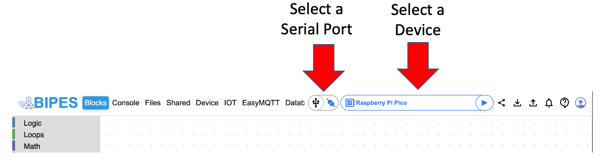
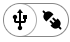
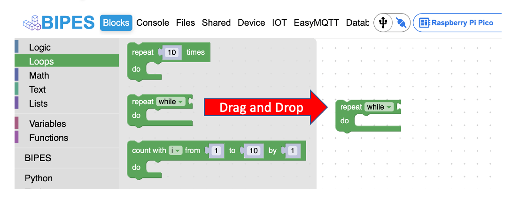

Getting Started
Before getting started with BIPES, follow the directions below to setup your microcontroller.
Setup
However, before getting started with BIPES, your microcontroller board must be setup. Regardless of which board you are using, you should start by doing the following steps:
-
Download the flash_nuke.utf file to your computer.
-
Download the latest MicroPython utf file to your computer.
-
Hold down the BOOTSEL button on the Pico or the BOOT button on the Maker Pi then connect your microcontroller board to your computer with a micro usb cable and it will appear as a drive onto which you can drag the flash_nuke.uf2 file
- If you don't see the Maker Pi board, make sure the on/off switch is in the on position before connecting to your computer.
-
Once the drive reappears, copy the MicroPython utf file to your device.
If you are having trouble, take a look at the Drag-and-Drop MicroPython page
Working with BIPES
Working with BIPES is easy, since there is nothing to load on your computer. BIPES can be found online. Once the Welcome screen loads in your browser, you can do the following:
- Close the Welcome screen
There are two configurations you must change. Your serial port and device.

-
Connect to your device
- Serial connection 
On the Mac, the Pico will connect to a port in the /dev/ directory such as:
/dev/cu.usbmodem140101
- 
1 | |
-
Select your device:
-
The Raspberry Pi Pico

-
The Maker Pi RP2040

-
-
The left navigation pane contains all of the blocks you will need to run the examples for the Raspberry Pi Pico and the Maker Pi RP2040 microcontrollers.

Using the BIPES Drag and Drop Interface
Adding a loop


Test Your Connection
The best way to test your connection is to write a small program that will flash the on-board LED. See the basic blink example under Raspberry Pi Pico.
- Congratulations! You are ready to start using BIPES.